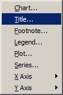
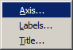

Plot Menu
Plot Menu is enabled only if the current window is a chart window.
This menu includes the following commands:

Chart: Invokes General page of the Chart Editor allowing to set general options.
Title: Opens Chart Editor at the Titles Page. Allows fast modification of title text, font, backdrop, and location.
Footnote: Similar to Title, but opens Chart Editor at Footnote editing page.
Legend: Opens Chart Editor at the Legend Page. Allows fast modification of legend font, backdrop, and location.
Plot: Opens the Plot Page page of the Chart Editor.
Series: Chart Editor at the Series Page.
X Axis: Opens the Axis submenu with items for the modification of X-axis (i.e., Bottom Axis) settings:
Axis: opens Axis Options Page of the Chart Editor dialog. Allows to change scale, ticks, axis intersection, pens, etc.
Labels: opens Axis Options Page of the Chart Editor dialog. Allows to change scale, ticks, axis intersection, pens, etc.
Axis Title: opens Axis Title Page of the Chart Editor dialog. Allows to change text, font, layout, backdrop of the axis title.
Y Axis: Opens the Axis submenu with items for the modification of Y-axis (i.e., Left Axis) settings. It is similar to the previous item, the only difference is that all modifications are applied to the different axes.
All commands in the Plot Menu invoke Chart Editor with different starting selections in its hierarchical tree. You can access the same options using right-click popup menus of a chart window.